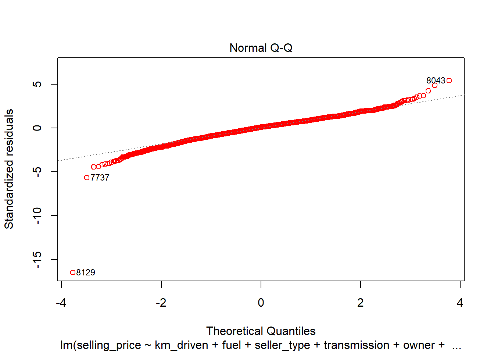

library("caret")
library("MPV")
library("faraway")
library("mltools")
library(data.table)
library(MASS)# i already added the synthetic data point as the last row of the csv, row8129
cardata<-read.csv("C:\\Users\\sjmif\\Downloads\\cardetailsv3withsynth.csv")
attach(cardata)
summary(cardata)## name year selling_price
## Maruti Swift Dzire VDI : 129 Min. :1983 Min. : 9495
## Maruti Alto 800 LXI : 82 1st Qu.:2011 1st Qu.: 254999
## Maruti Alto LXi : 71 Median :2015 Median : 450000
## BMW X4 M Sport X xDrive20d: 62 Mean :2014 Mean : 638194
## Maruti Swift VDI : 61 3rd Qu.:2017 3rd Qu.: 675000
## Maruti Swift VDI BSIV : 59 Max. :2020 Max. :10000000
## (Other) :7665
## km_driven fuel seller_type transmission
## Min. : 1 CNG : 57 Dealer :1127 Automatic:1051
## 1st Qu.: 35000 Diesel:4402 Individual :6766 Manual :7078
## Median : 60000 LPG : 38 Trustmark Dealer: 236
## Mean : 69872 Petrol:3632
## 3rd Qu.: 98000
## Max. :2360457
##
## owner mileage engine
## First Owner :5290 18.9 kmpl: 225 1248 CC:1017
## Fourth & Above Owner: 174 : 221 1197 CC: 832
## Second Owner :2105 19.7 kmpl: 173 998 CC : 453
## Test Drive Car : 5 18.6 kmpl: 164 796 CC : 444
## Third Owner : 555 21.1 kmpl: 157 2179 CC: 389
## 17.0 kmpl: 133 1498 CC: 375
## (Other) :7056 (Other):4619
## max_power torque seats
## 74 bhp : 377 190Nm@ 2000rpm: 530 Min. : 2.000
## 81.80 bhp: 220 200Nm@ 1750rpm: 445 1st Qu.: 5.000
## : 215 90Nm@ 3500rpm : 405 Median : 5.000
## 88.5 bhp : 204 113Nm@ 4200rpm: 223 Mean : 5.417
## 67 bhp : 165 : 222 3rd Qu.: 5.000
## 46.3 bhp : 162 114Nm@ 4000rpm: 171 Max. :14.000
## (Other) :6786 (Other) :6133 NA's :221#remove NA's
cardata<-cardata[complete.cases(cardata),]
anyNA(cardata)## [1] FALSE#first column should now just be year.
cardata<-data.frame(cardata[,-1])
cardata[(1:5),1]## [1] 2014 2014 2006 2010 2007#switch to car age
cardata$car_age<-with(cardata,2020-cardata$year)
#prune year column
cardata<-data.frame(cardata[,-1])#cleaning columns with symbols
cardata$max_power<-{as.numeric(gsub("[a-zA-Z/]", "",cardata$max_power))}
cardata$engine<-{as.numeric(gsub("[a-zA-Z/]", "",cardata$engine))}
cardata$mileage<-{as.numeric(gsub("[a-zA-Z]", "",cardata$mileage))}
#the rows with CNG and LPG fuel are also removed by the previous linecardata<-cardata[complete.cases(cardata),]
anyNA(cardata)## [1] FALSE#taking out torque column
cardata<-data.frame(cardata[,-10])#remove rows where mileage is 0
cardata<-cardata[!(cardata$mileage<0.001),]#checking the data before getting logs
summary(cardata)## selling_price km_driven fuel
## Min. : 9495 Min. : 1000 CNG : 0
## 1st Qu.: 270000 1st Qu.: 34000 Diesel:4293
## Median : 455000 Median : 60000 LPG : 0
## Mean : 653772 Mean : 69191 Petrol:3510
## 3rd Qu.: 695000 3rd Qu.: 96000
## Max. :10000000 Max. :2360457
## seller_type transmission owner
## Dealer :1103 Automatic:1036 First Owner :5156
## Individual :6464 Manual :6767 Fourth & Above Owner: 157
## Trustmark Dealer: 236 Second Owner :1984
## Test Drive Car : 5
## Third Owner : 501
##
## mileage engine max_power seats
## Min. : 9.00 Min. : 624 Min. : 34.20 Min. : 4.000
## 1st Qu.:16.78 1st Qu.:1197 1st Qu.: 69.00 1st Qu.: 5.000
## Median :19.30 Median :1248 Median : 82.50 Median : 5.000
## Mean :19.43 Mean :1463 Mean : 91.94 Mean : 5.423
## 3rd Qu.:22.32 3rd Qu.:1582 3rd Qu.:102.00 3rd Qu.: 5.000
## Max. :42.00 Max. :3604 Max. :400.00 Max. :14.000
## car_age
## Min. : 0.000
## 1st Qu.: 3.000
## Median : 5.000
## Mean : 6.005
## 3rd Qu.: 8.000
## Max. :26.000cardata$selling_price <- log(cardata$selling_price)
cardata$km_driven <- log(cardata$km_driven)
cardata$max_power <- log(cardata$max_power)
#checking the data after getting logs
summary(cardata)## selling_price km_driven fuel seller_type
## Min. : 9.159 Min. : 6.908 CNG : 0 Dealer :1103
## 1st Qu.:12.506 1st Qu.:10.434 Diesel:4293 Individual :6464
## Median :13.028 Median :11.002 LPG : 0 Trustmark Dealer: 236
## Mean :13.005 Mean :10.847 Petrol:3510
## 3rd Qu.:13.452 3rd Qu.:11.472
## Max. :16.118 Max. :14.674
## transmission owner mileage
## Automatic:1036 First Owner :5156 Min. : 9.00
## Manual :6767 Fourth & Above Owner: 157 1st Qu.:16.78
## Second Owner :1984 Median :19.30
## Test Drive Car : 5 Mean :19.43
## Third Owner : 501 3rd Qu.:22.32
## Max. :42.00
## engine max_power seats car_age
## Min. : 624 Min. :3.532 Min. : 4.000 Min. : 0.000
## 1st Qu.:1197 1st Qu.:4.234 1st Qu.: 5.000 1st Qu.: 3.000
## Median :1248 Median :4.413 Median : 5.000 Median : 5.000
## Mean :1463 Mean :4.457 Mean : 5.423 Mean : 6.005
## 3rd Qu.:1582 3rd Qu.:4.625 3rd Qu.: 5.000 3rd Qu.: 8.000
## Max. :3604 Max. :5.991 Max. :14.000 Max. :26.000# scale carData
scaledData <- cardata
scaledData[c(1,2,7,8,9,10,11)] <- lapply(scaledData[c(1,2,7,8,9,10,11)], function(x) c(scale(x)))
#checking the data after unit normal scaling
summary(scaledData)## selling_price km_driven fuel
## Min. :-4.64056 Min. :-4.5098 CNG : 0
## 1st Qu.:-0.60220 1st Qu.:-0.4726 Diesel:4293
## Median : 0.02735 Median : 0.1777 LPG : 0
## Mean : 0.00000 Mean : 0.0000 Petrol:3510
## 3rd Qu.: 0.53836 3rd Qu.: 0.7158
## Max. : 3.75493 Max. : 4.3819
## seller_type transmission owner
## Dealer :1103 Automatic:1036 First Owner :5156
## Individual :6464 Manual :6767 Fourth & Above Owner: 157
## Trustmark Dealer: 236 Second Owner :1984
## Test Drive Car : 5
## Third Owner : 501
##
## mileage engine max_power seats
## Min. :-2.67265 Min. :-1.6641 Min. :-2.6462 Min. :-1.4789
## 1st Qu.:-0.67936 1st Qu.:-0.5274 1st Qu.:-0.6381 1st Qu.:-0.4396
## Median :-0.03372 Median :-0.4262 Median :-0.1269 Median :-0.4396
## Mean : 0.00000 Mean : 0.0000 Mean : 0.0000 Mean : 0.0000
## 3rd Qu.: 0.74003 3rd Qu.: 0.2364 3rd Qu.: 0.4801 3rd Qu.:-0.4396
## Max. : 5.78218 Max. : 4.2478 Max. : 4.3896 Max. : 8.9146
## car_age
## Min. :-1.5535
## 1st Qu.:-0.7774
## Median :-0.2600
## Mean : 0.0000
## 3rd Qu.: 0.5161
## Max. : 5.1728#test train split
set.seed(13)
n=ceiling(0.8*length(scaledData$selling_price))
train.sample=sample(c(1:length(scaledData$selling_price)),n)
train.sample=sort(train.sample)
train_data<- scaledData[train.sample, ]
test_data <- scaledData[-train.sample, ]#MODEL SELECTION
#define model with all predictors
fullModelscaledData<-lm(selling_price ~ .,data = train_data)#stepwise bidirectional variable selection
print('VARIABLE SELECTION STEPWISE')## [1] "VARIABLE SELECTION STEPWISE"step.model.scaledData<-stepAIC(fullModelscaledData,direction = "both", trace = F)
summary(step.model.scaledData)##
## Call:
## lm(formula = selling_price ~ km_driven + fuel + seller_type +
## transmission + owner + mileage + engine + max_power + seats +
## car_age, data = train_data)
##
## Residuals:
## Min 1Q Median 3Q Max
## -6.1221 -0.2252 0.0324 0.2376 2.0135
##
## Coefficients:
## Estimate Std. Error t value Pr(>|t|)
## (Intercept) 0.501265 0.020241 24.765 < 2e-16 ***
## km_driven -0.077669 0.006492 -11.964 < 2e-16 ***
## fuelPetrol -0.163294 0.014350 -11.379 < 2e-16 ***
## seller_typeIndividual -0.137375 0.015252 -9.007 < 2e-16 ***
## seller_typeTrustmark Dealer -0.090267 0.031007 -2.911 0.00361 **
## transmissionManual -0.323164 0.017679 -18.279 < 2e-16 ***
## ownerFourth & Above Owner -0.145141 0.035645 -4.072 4.72e-05 ***
## ownerSecond Owner -0.077729 0.012236 -6.352 2.27e-10 ***
## ownerTest Drive Car 0.784113 0.167597 4.679 2.95e-06 ***
## ownerThird Owner -0.140397 0.021330 -6.582 5.01e-11 ***
## mileage 0.079659 0.008362 9.527 < 2e-16 ***
## engine 0.196488 0.010799 18.195 < 2e-16 ***
## max_power 0.395094 0.008060 49.020 < 2e-16 ***
## seats 0.028440 0.007132 3.987 6.75e-05 ***
## car_age -0.456304 0.007408 -61.595 < 2e-16 ***
## ---
## Signif. codes: 0 '***' 0.001 '**' 0.01 '*' 0.05 '.' 0.1 ' ' 1
##
## Residual standard error: 0.3731 on 6228 degrees of freedom
## Multiple R-squared: 0.8597, Adjusted R-squared: 0.8594
## F-statistic: 2727 on 14 and 6228 DF, p-value: < 2.2e-16select.mod.scaledData<-step(fullModelscaledData)## Start: AIC=-12296.16
## selling_price ~ km_driven + fuel + seller_type + transmission +
## owner + mileage + engine + max_power + seats + car_age
##
## Df Sum of Sq RSS AIC
## <none> 866.81 -12296.2
## - seats 1 2.21 869.02 -12282.2
## - seller_type 2 11.32 878.13 -12219.2
## - owner 4 12.79 879.60 -12212.7
## - mileage 1 12.63 879.44 -12207.8
## - fuel 1 18.02 884.83 -12169.7
## - km_driven 1 19.92 886.73 -12156.3
## - engine 1 46.08 912.88 -11974.8
## - transmission 1 46.51 913.31 -11971.9
## - max_power 1 334.44 1201.25 -10261.1
## - car_age 1 528.03 1394.84 -9328.3print('VIFs')## [1] "VIFs"vif(select.mod.scaledData)## km_driven fuelPetrol
## 1.891300 2.283261
## seller_typeIndividual seller_typeTrustmark Dealer
## 1.448754 1.227063
## transmissionManual ownerFourth & Above Owner
## 1.587964 1.091976
## ownerSecond Owner ownerTest Drive Car
## 1.280602 1.008276
## ownerThird Owner mileage
## 1.198052 3.127678
## engine max_power
## 5.210216 2.913884
## seats car_age
## 2.260051 2.452684print('Condition Number')## [1] "Condition Number"kappa(select.mod.scaledData)## [1] 48.63646print('Confidence Interval of Coefficients')## [1] "Confidence Interval of Coefficients"confint(select.mod.scaledData)## 2.5 % 97.5 %
## (Intercept) 0.46158611 0.54094383
## km_driven -0.09039515 -0.06494289
## fuelPetrol -0.19142520 -0.13516207
## seller_typeIndividual -0.16727455 -0.10747467
## seller_typeTrustmark Dealer -0.15105103 -0.02948337
## transmissionManual -0.35782127 -0.28850715
## ownerFourth & Above Owner -0.21501758 -0.07526429
## ownerSecond Owner -0.10171645 -0.05374251
## ownerTest Drive Car 0.45556502 1.11266066
## ownerThird Owner -0.18221053 -0.09858405
## mileage 0.06326710 0.09605053
## engine 0.17531826 0.21765841
## max_power 0.37929393 0.41089415
## seats 0.01445810 0.04242179
## car_age -0.47082659 -0.44178142plot(select.mod.scaledData, which=1, col=c("blue")) # Residuals vs Fitted Plotplot(select.mod.scaledData, which=2, col=c("red")) # Q-Q Plot
plot(select.mod.scaledData, which=3, col=c("blue")) # Scale-Location Plotplot(select.mod.scaledData, which=5, col=c("blue")) # Residuals vs Leverage
cooksd <- cooks.distance(select.mod.scaledData)
print('the largest cooks distance is')## [1] "the largest cooks distance is"max(cooksd)## [1] 0.1690215print('the average cooks distance is')## [1] "the average cooks distance is"mean(cooksd)## [1] 0.0002327369# Plot the Cook's Distance using the traditional 4/n criterion
plot(cooksd, pch="*", cex=2, main="Influential Obs by Cooks distance") # plot cook's distance
abline(h = 4/nrow(train_data), col="red") # add cutoff line
text(x=1:length(cooksd)+1, y=cooksd, labels=ifelse(cooksd>4/nrow(train_data), names(cooksd),""), col="red") # add labelsinfluential <- as.numeric(names(cooksd)[(cooksd > 4 * mean(cooksd, na.rm = TRUE))])
length(influential)## [1] 185# backward variable selection
print('BACKWARD SELECTION')## [1] "BACKWARD SELECTION"step.backward.model.scaledData<-stepAIC(fullModelscaledData,selection = "backward", trace = F)
summary(step.backward.model.scaledData)##
## Call:
## lm(formula = selling_price ~ km_driven + fuel + seller_type +
## transmission + owner + mileage + engine + max_power + seats +
## car_age, data = train_data)
##
## Residuals:
## Min 1Q Median 3Q Max
## -6.1221 -0.2252 0.0324 0.2376 2.0135
##
## Coefficients:
## Estimate Std. Error t value Pr(>|t|)
## (Intercept) 0.501265 0.020241 24.765 < 2e-16 ***
## km_driven -0.077669 0.006492 -11.964 < 2e-16 ***
## fuelPetrol -0.163294 0.014350 -11.379 < 2e-16 ***
## seller_typeIndividual -0.137375 0.015252 -9.007 < 2e-16 ***
## seller_typeTrustmark Dealer -0.090267 0.031007 -2.911 0.00361 **
## transmissionManual -0.323164 0.017679 -18.279 < 2e-16 ***
## ownerFourth & Above Owner -0.145141 0.035645 -4.072 4.72e-05 ***
## ownerSecond Owner -0.077729 0.012236 -6.352 2.27e-10 ***
## ownerTest Drive Car 0.784113 0.167597 4.679 2.95e-06 ***
## ownerThird Owner -0.140397 0.021330 -6.582 5.01e-11 ***
## mileage 0.079659 0.008362 9.527 < 2e-16 ***
## engine 0.196488 0.010799 18.195 < 2e-16 ***
## max_power 0.395094 0.008060 49.020 < 2e-16 ***
## seats 0.028440 0.007132 3.987 6.75e-05 ***
## car_age -0.456304 0.007408 -61.595 < 2e-16 ***
## ---
## Signif. codes: 0 '***' 0.001 '**' 0.01 '*' 0.05 '.' 0.1 ' ' 1
##
## Residual standard error: 0.3731 on 6228 degrees of freedom
## Multiple R-squared: 0.8597, Adjusted R-squared: 0.8594
## F-statistic: 2727 on 14 and 6228 DF, p-value: < 2.2e-16#forward variable selection
print('FORWARD SELECTION')## [1] "FORWARD SELECTION"intercept.only.model.scaledData<-lm(selling_price~1,data = train_data)
stepAIC(intercept.only.model.scaledData,direction = "forward")## Start: AIC=-61.31
## selling_price ~ 1##
## Call:
## lm(formula = selling_price ~ 1, data = train_data)
##
## Coefficients:
## (Intercept)
## -0.00497step.forward.model.scaledData<-stepAIC(intercept.only.model.scaledData,selection = "forward")## Start: AIC=-61.31
## selling_price ~ 1summary(step.forward.model.scaledData)##
## Call:
## lm(formula = selling_price ~ 1, data = train_data)
##
## Residuals:
## Min 1Q Median 3Q Max
## -4.6356 -0.5972 0.0217 0.5346 3.7599
##
## Coefficients:
## Estimate Std. Error t value Pr(>|t|)
## (Intercept) -0.00497 0.01259 -0.395 0.693
##
## Residual standard error: 0.995 on 6242 degrees of freedomprint('VIFs')## [1] "VIFs"print(vif(step.forward.model.scaledData))## named numeric(0)print('conditionNumber')## [1] "conditionNumber"print(kappa(step.forward.model.scaledData))## [1] 1# compare the selected model and the model where we remove engine
print('Comparing the selected model and the model with engine removed')## [1] "Comparing the selected model and the model with engine removed"noEngineModel <- lm(formula = selling_price ~ km_driven + fuel + seller_type + transmission + owner + mileage + max_power + seats + car_age, data = train_data)
summary(noEngineModel)##
## Call:
## lm(formula = selling_price ~ km_driven + fuel + seller_type +
## transmission + owner + mileage + max_power + seats + car_age,
## data = train_data)
##
## Residuals:
## Min 1Q Median 3Q Max
## -6.1421 -0.2403 0.0275 0.2393 1.8113
##
## Coefficients:
## Estimate Std. Error t value Pr(>|t|)
## (Intercept) 0.595494 0.020079 29.658 < 2e-16 ***
## km_driven -0.068861 0.006643 -10.366 < 2e-16 ***
## fuelPetrol -0.281021 0.013144 -21.381 < 2e-16 ***
## seller_typeIndividual -0.143453 0.015648 -9.168 < 2e-16 ***
## seller_typeTrustmark Dealer -0.036336 0.031672 -1.147 0.2513
## transmissionManual -0.363618 0.017997 -20.204 < 2e-16 ***
## ownerFourth & Above Owner -0.162841 0.036564 -4.454 8.59e-06 ***
## ownerSecond Owner -0.081105 0.012555 -6.460 1.13e-10 ***
## ownerTest Drive Car 0.761109 0.171975 4.426 9.78e-06 ***
## ownerThird Owner -0.153987 0.021874 -7.040 2.13e-12 ***
## mileage 0.012854 0.007709 1.667 0.0955 .
## max_power 0.470488 0.007094 66.323 < 2e-16 ***
## seats 0.080382 0.006707 11.985 < 2e-16 ***
## car_age -0.457155 0.007602 -60.138 < 2e-16 ***
## ---
## Signif. codes: 0 '***' 0.001 '**' 0.01 '*' 0.05 '.' 0.1 ' ' 1
##
## Residual standard error: 0.3828 on 6229 degrees of freedom
## Multiple R-squared: 0.8523, Adjusted R-squared: 0.852
## F-statistic: 2765 on 13 and 6229 DF, p-value: < 2.2e-16vif(noEngineModel)## km_driven fuelPetrol
## 1.880783 1.819071
## seller_typeIndividual seller_typeTrustmark Dealer
## 1.448059 1.215849
## transmissionManual ownerFourth & Above Owner
## 1.562849 1.091163
## ownerSecond Owner ownerTest Drive Car
## 1.280308 1.008219
## ownerThird Owner mileage
## 1.196583 2.524626
## max_power seats
## 2.143699 1.897975
## car_age
## 2.452586kappa(noEngineModel)## [1] 48.0261#test whther coefficient of quadratic and interaction terms are significant
anova(noEngineModel,select.mod.scaledData) # List the least complex model first## Analysis of Variance Table
##
## Model 1: selling_price ~ km_driven + fuel + seller_type + transmission +
## owner + mileage + max_power + seats + car_age
## Model 2: selling_price ~ km_driven + fuel + seller_type + transmission +
## owner + mileage + engine + max_power + seats + car_age
## Res.Df RSS Df Sum of Sq F Pr(>F)
## 1 6229 912.88
## 2 6228 866.81 1 46.075 331.05 < 2.2e-16 ***
## ---
## Signif. codes: 0 '***' 0.001 '**' 0.01 '*' 0.05 '.' 0.1 ' ' 1train_data[6243,]## selling_price km_driven fuel seller_type transmission owner
## 8129 -4.640556 2.605095 Petrol Dealer Automatic First Owner
## mileage engine max_power seats car_age
## 8129 -2.037258 1.063681 1.525696 -0.4395568 -1.553535# remove the outlier
print('Removing the synthetic data point')## [1] "Removing the synthetic data point"#full model
model.outlier8129removed <- lm(formula = selling_price ~ km_driven + fuel + seller_type + transmission + owner + mileage + engine + max_power + seats + car_age, data = train_data,subset=1:6242)
summary(model.outlier8129removed)##
## Call:
## lm(formula = selling_price ~ km_driven + fuel + seller_type +
## transmission + owner + mileage + engine + max_power + seats +
## car_age, data = train_data, subset = 1:6242)
##
## Residuals:
## Min 1Q Median 3Q Max
## -2.11612 -0.22578 0.03298 0.23476 2.03263
##
## Coefficients:
## Estimate Std. Error t value Pr(>|t|)
## (Intercept) 0.513172 0.019808 25.907 < 2e-16 ***
## km_driven -0.069315 0.006368 -10.884 < 2e-16 ***
## fuelPetrol -0.159324 0.014037 -11.350 < 2e-16 ***
## seller_typeIndividual -0.144405 0.014923 -9.677 < 2e-16 ***
## seller_typeTrustmark Dealer -0.100311 0.030331 -3.307 0.000948 ***
## transmissionManual -0.330371 0.017296 -19.101 < 2e-16 ***
## ownerFourth & Above Owner -0.143955 0.034861 -4.129 3.69e-05 ***
## ownerSecond Owner -0.078757 0.011967 -6.581 5.05e-11 ***
## ownerTest Drive Car 0.773642 0.163913 4.720 2.41e-06 ***
## ownerThird Owner -0.140788 0.020861 -6.749 1.62e-11 ***
## mileage 0.074565 0.008183 9.112 < 2e-16 ***
## engine 0.195960 0.010562 18.554 < 2e-16 ***
## max_power 0.393450 0.007883 49.909 < 2e-16 ***
## seats 0.025527 0.006978 3.658 0.000256 ***
## car_age -0.463307 0.007257 -63.841 < 2e-16 ***
## ---
## Signif. codes: 0 '***' 0.001 '**' 0.01 '*' 0.05 '.' 0.1 ' ' 1
##
## Residual standard error: 0.3649 on 6227 degrees of freedom
## Multiple R-squared: 0.8654, Adjusted R-squared: 0.8651
## F-statistic: 2860 on 14 and 6227 DF, p-value: < 2.2e-16vif(model.outlier8129removed)## km_driven fuelPetrol
## 1.900758 2.283451
## seller_typeIndividual seller_typeTrustmark Dealer
## 1.448725 1.227530
## transmissionManual ownerFourth & Above Owner
## 1.587235 1.091977
## ownerSecond Owner ownerTest Drive Car
## 1.280565 1.008290
## ownerThird Owner mileage
## 1.198041 3.129835
## engine max_power
## 5.209304 2.913224
## seats car_age
## 2.261368 2.459797kappa(model.outlier8129removed)## [1] 48.59561plot(model.outlier8129removed, which=1, col=c("blue")) # Residuals vs Fitted Plotplot(model.outlier8129removed, which=2, col=c("red")) # Q-Q Plotplot(model.outlier8129removed, which=3, col=c("blue")) # Scale-Location Plotplot(model.outlier8129removed, which=5, col=c("blue")) # Residuals vs Leverage#stepwise bidirectional variable selection
print('VARIABLE SELECTION STEPWISE')## [1] "VARIABLE SELECTION STEPWISE"step.model.outlier8129removed<-stepAIC(model.outlier8129removed,direction = "both", trace = F)
summary(step.model.outlier8129removed)##
## Call:
## lm(formula = selling_price ~ km_driven + fuel + seller_type +
## transmission + owner + mileage + engine + max_power + seats +
## car_age, data = train_data, subset = 1:6242)
##
## Residuals:
## Min 1Q Median 3Q Max
## -2.11612 -0.22578 0.03298 0.23476 2.03263
##
## Coefficients:
## Estimate Std. Error t value Pr(>|t|)
## (Intercept) 0.513172 0.019808 25.907 < 2e-16 ***
## km_driven -0.069315 0.006368 -10.884 < 2e-16 ***
## fuelPetrol -0.159324 0.014037 -11.350 < 2e-16 ***
## seller_typeIndividual -0.144405 0.014923 -9.677 < 2e-16 ***
## seller_typeTrustmark Dealer -0.100311 0.030331 -3.307 0.000948 ***
## transmissionManual -0.330371 0.017296 -19.101 < 2e-16 ***
## ownerFourth & Above Owner -0.143955 0.034861 -4.129 3.69e-05 ***
## ownerSecond Owner -0.078757 0.011967 -6.581 5.05e-11 ***
## ownerTest Drive Car 0.773642 0.163913 4.720 2.41e-06 ***
## ownerThird Owner -0.140788 0.020861 -6.749 1.62e-11 ***
## mileage 0.074565 0.008183 9.112 < 2e-16 ***
## engine 0.195960 0.010562 18.554 < 2e-16 ***
## max_power 0.393450 0.007883 49.909 < 2e-16 ***
## seats 0.025527 0.006978 3.658 0.000256 ***
## car_age -0.463307 0.007257 -63.841 < 2e-16 ***
## ---
## Signif. codes: 0 '***' 0.001 '**' 0.01 '*' 0.05 '.' 0.1 ' ' 1
##
## Residual standard error: 0.3649 on 6227 degrees of freedom
## Multiple R-squared: 0.8654, Adjusted R-squared: 0.8651
## F-statistic: 2860 on 14 and 6227 DF, p-value: < 2.2e-16select.mod.outlier8129removed<-step(step.model.outlier8129removed)## Start: AIC=-12571.73
## selling_price ~ km_driven + fuel + seller_type + transmission +
## owner + mileage + engine + max_power + seats + car_age
##
## Df Sum of Sq RSS AIC
## <none> 828.98 -12571.7
## - seats 1 1.78 830.76 -12560.3
## - mileage 1 11.05 840.03 -12491.1
## - owner 4 12.81 841.79 -12484.0
## - seller_type 2 12.48 841.46 -12482.5
## - km_driven 1 15.77 844.75 -12456.1
## - fuel 1 17.15 846.13 -12445.9
## - engine 1 45.83 874.81 -12237.9
## - transmission 1 48.57 877.55 -12218.3
## - max_power 1 331.61 1160.59 -10473.4
## - car_age 1 542.58 1371.56 -9430.8print('VIFs')## [1] "VIFs"vif(step.model.outlier8129removed)## km_driven fuelPetrol
## 1.900758 2.283451
## seller_typeIndividual seller_typeTrustmark Dealer
## 1.448725 1.227530
## transmissionManual ownerFourth & Above Owner
## 1.587235 1.091977
## ownerSecond Owner ownerTest Drive Car
## 1.280565 1.008290
## ownerThird Owner mileage
## 1.198041 3.129835
## engine max_power
## 5.209304 2.913224
## seats car_age
## 2.261368 2.459797print('Condition Number')## [1] "Condition Number"kappa(step.model.outlier8129removed)## [1] 48.59561print('Confidence Interval of Coefficients')## [1] "Confidence Interval of Coefficients"confint(select.mod.scaledData)## 2.5 % 97.5 %
## (Intercept) 0.46158611 0.54094383
## km_driven -0.09039515 -0.06494289
## fuelPetrol -0.19142520 -0.13516207
## seller_typeIndividual -0.16727455 -0.10747467
## seller_typeTrustmark Dealer -0.15105103 -0.02948337
## transmissionManual -0.35782127 -0.28850715
## ownerFourth & Above Owner -0.21501758 -0.07526429
## ownerSecond Owner -0.10171645 -0.05374251
## ownerTest Drive Car 0.45556502 1.11266066
## ownerThird Owner -0.18221053 -0.09858405
## mileage 0.06326710 0.09605053
## engine 0.17531826 0.21765841
## max_power 0.37929393 0.41089415
## seats 0.01445810 0.04242179
## car_age -0.47082659 -0.44178142noEngineModel.outlier8129removed <- lm(formula = selling_price ~ km_driven + fuel + seller_type + transmission + owner + mileage + max_power + seats + car_age, data = train_data,subset=1:6242)
summary(noEngineModel.outlier8129removed)##
## Call:
## lm(formula = selling_price ~ km_driven + fuel + seller_type +
## transmission + owner + mileage + max_power + seats + car_age,
## data = train_data, subset = 1:6242)
##
## Residuals:
## Min 1Q Median 3Q Max
## -2.17568 -0.23996 0.02714 0.23829 1.83094
##
## Coefficients:
## Estimate Std. Error t value Pr(>|t|)
## (Intercept) 0.607185 0.019670 30.869 < 2e-16 ***
## km_driven -0.060503 0.006523 -9.275 < 2e-16 ***
## fuelPetrol -0.276721 0.012870 -21.501 < 2e-16 ***
## seller_typeIndividual -0.150490 0.015325 -9.820 < 2e-16 ***
## seller_typeTrustmark Dealer -0.046558 0.031013 -1.501 0.133
## transmissionManual -0.370739 0.017625 -21.035 < 2e-16 ***
## ownerFourth & Above Owner -0.161604 0.035796 -4.515 6.46e-06 ***
## ownerSecond Owner -0.082126 0.012291 -6.682 2.57e-11 ***
## ownerTest Drive Car 0.750666 0.168365 4.459 8.40e-06 ***
## ownerThird Owner -0.154342 0.021415 -7.207 6.38e-13 ***
## mileage 0.007924 0.007553 1.049 0.294
## max_power 0.468635 0.006946 67.470 < 2e-16 ***
## seats 0.077320 0.006569 11.771 < 2e-16 ***
## car_age -0.464179 0.007454 -62.270 < 2e-16 ***
## ---
## Signif. codes: 0 '***' 0.001 '**' 0.01 '*' 0.05 '.' 0.1 ' ' 1
##
## Residual standard error: 0.3748 on 6228 degrees of freedom
## Multiple R-squared: 0.858, Adjusted R-squared: 0.8577
## F-statistic: 2894 on 13 and 6228 DF, p-value: < 2.2e-16vif(noEngineModel.outlier8129removed)## km_driven fuelPetrol
## 1.890187 1.819460
## seller_typeIndividual seller_typeTrustmark Dealer
## 1.448025 1.216331
## transmissionManual ownerFourth & Above Owner
## 1.562117 1.091164
## ownerSecond Owner ownerTest Drive Car
## 1.280270 1.008233
## ownerThird Owner mileage
## 1.196571 2.526894
## max_power seats
## 2.143448 1.899439
## car_age
## 2.459694kappa(noEngineModel.outlier8129removed)## [1] 47.98301#test whether the adding the engine predictor is significant when compared to the no engine model
anova(noEngineModel.outlier8129removed,step.model.outlier8129removed) # List the least complex model first## Analysis of Variance Table
##
## Model 1: selling_price ~ km_driven + fuel + seller_type + transmission +
## owner + mileage + max_power + seats + car_age
## Model 2: selling_price ~ km_driven + fuel + seller_type + transmission +
## owner + mileage + engine + max_power + seats + car_age
## Res.Df RSS Df Sum of Sq F Pr(>F)
## 1 6228 874.81
## 2 6227 828.98 1 45.827 344.24 < 2.2e-16 ***
## ---
## Signif. codes: 0 '***' 0.001 '**' 0.01 '*' 0.05 '.' 0.1 ' ' 1Noenginepreds<-predict(noEngineModel.outlier8129removed,test_data)
fullmodelpreds<-predict(model.outlier8129removed,test_data)
selectmodelpreds<-predict(select.mod.outlier8129removed,test_data)plot(test_data$selling_price,Noenginepreds,abline(c(0,1)), xlab = "actual", ylab = "predicted")plot(test_data$selling_price,fullmodelpreds,abline(c(0,1)), xlab = "actual", ylab = "predicted")plot(test_data$selling_price,selectmodelpreds,abline(c(0,1)), xlab = "actual", ylab = "predicted")
RMSE1<-sqrt(sum((Noenginepreds-test_data$selling_price)^2)/length(Noenginepreds))
print(RMSE1)## [1] 0.3770149RMSE2<-sqrt(sum((fullmodelpreds-test_data$selling_price)^2)/length(fullmodelpreds))
print(RMSE2)## [1] 0.3663351RMSE3<-sqrt(sum((selectmodelpreds-test_data$selling_price)^2)/length(selectmodelpreds))
print(RMSE3)## [1] 0.3663351